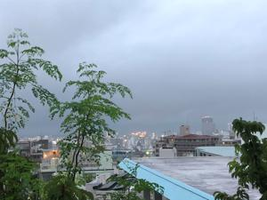
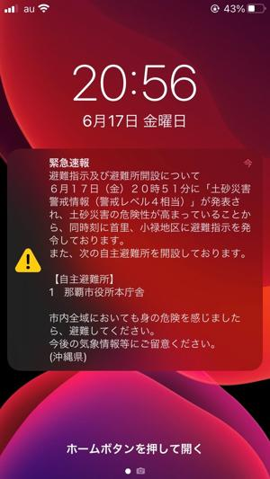
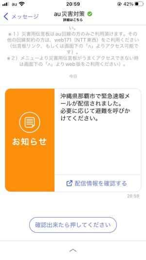
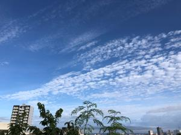

うるがいの話 ある日
最新: 緊急速報【うるがいの話 ある日】とは 一日だけのプログです
『うるがいの話』の最新一日だけのプログで、通信料が少なく経済的だ。カニの画像をクリックすると全ての日付が載る『うるがいの話』サイトを表示します
|
|
【うるがいの話】 うるがい(ｳﾙｶﾞｲ urugai)とは、『もずくがに』の名前でとても大きくなります。 |
|---|---|
|
|
【カミマヤーの話】 猫のことを方言でマヤーといいます。カミマヤー（kamimayaa）とは、神の猫のことです。 |
|
【たながぁの音楽】 たながぁ（ﾀﾅｶﾞｰ tanagaa）とは手長えびのことで、何種類かあり大きいのは車 エビぐらいになります。 |

|
【ぶながぁの話】 ぶながぁ(ﾌﾞﾅｶﾞｰ bunagaa)とは、赤い髪の毛、赤い身体、そして身長は１ｍ２０ｃｍ ぐらい、川の蟹を食べているの目撃された。場所は沖縄県国頭郡大宜味村のと ある村僕の隣近所に住んでいる爺さんから、聞いた話です。 |
|
|
【ギーマの話】 ギーマ(giima)とは、山原の里山に咲くスズランに似た、 花を付けます。実は食べられます、 気が付くと口の周りが紫になっています。 |
2022年06月18日 (土）緊急速報
15:10
   
まさか、あそこまで雨が降るとは・・・・。夕方５時ごろから、ジョギングへ
出かけようとする。ドアを開けると、かなり雨が降ってきた、諦める。それか
ら、雨は降る続きとうとう緊急速報が２０時５６分にスマホに届く。地球温暖
化ジャイ！。今日は、こちらは雨は降らず、久しぶりに洗濯物を干す。ただネ
ットで雨雲をみると、名護以降の北部には雨雲がかなりある。この書き込みの
ＰＭ３時時点でも大宜味村に避難指示が出ている。ダムの貯水状況を見ると国
管理９ダムがすべて１００％になっている（当たりまえか）。来週には梅雨明
けを期待する。
１５時０４分 ビットコインの総資産 ￥７、９７０↓